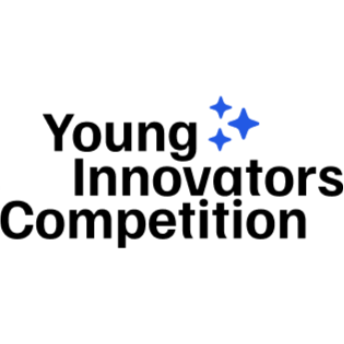
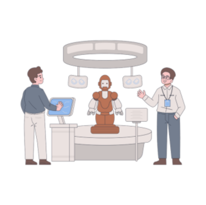
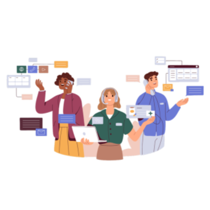
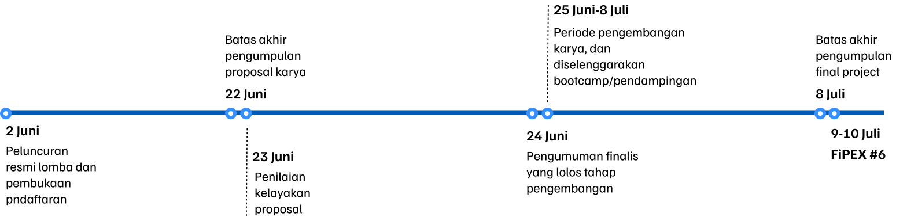

Final Project
Exhibition 2025
ABOUT
Pameran tahunan karya akhir yang diselenggarakan oleh mahasiswa Program Studi Sistem Informasi. Berfokus pada transformasi ide dan riset menjadi beragam solusi digital yang inovatif. Pameran ini menampilkan puluhan aplikasi dan karya lain dari mahasiswa Universitas Ahmad Dahlan Yogyakarta.

YIC

Exhibition

FI-Talks
Timeline YIC 1.0
